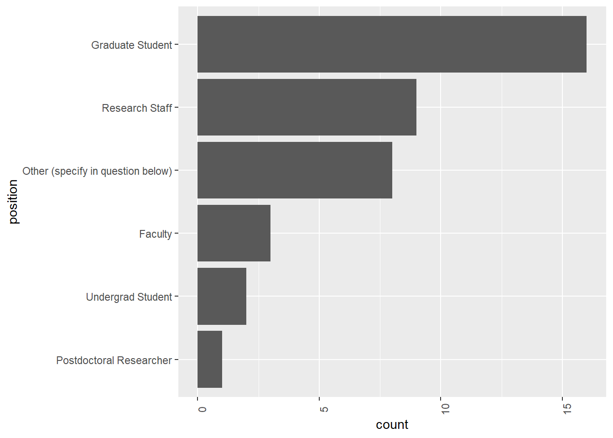
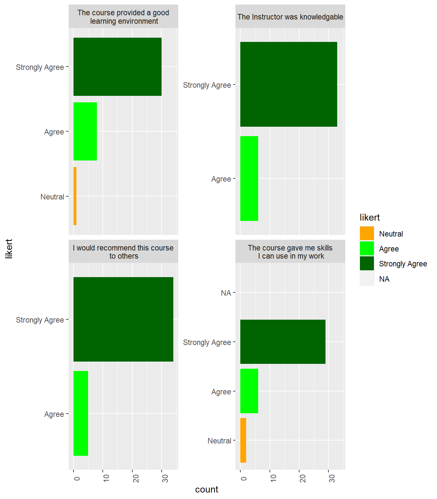
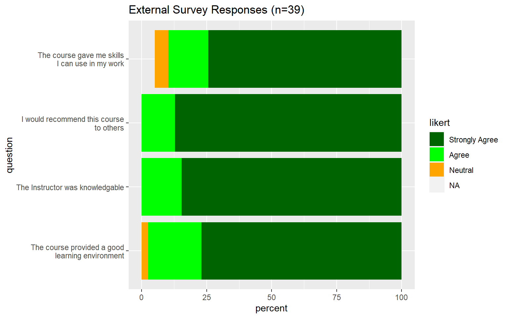
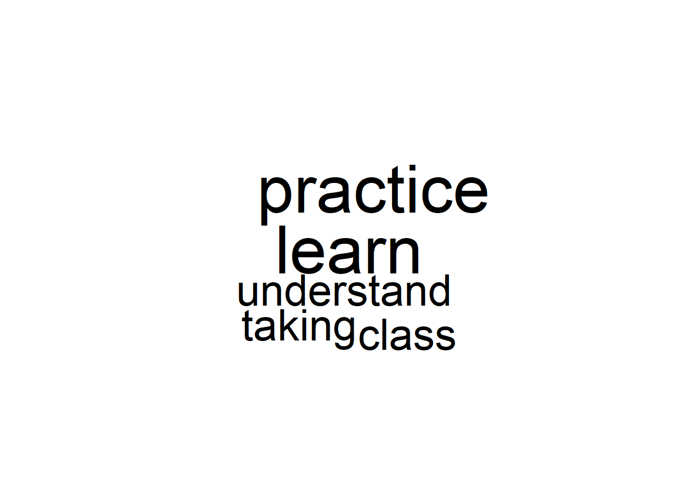
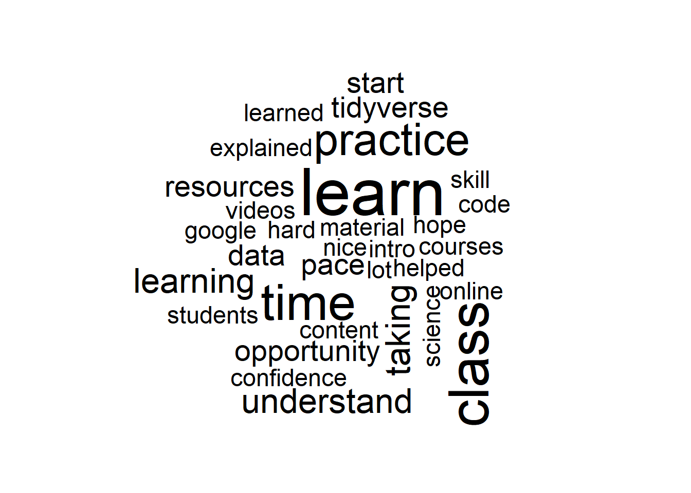

This is a pull of the course evaluation survey information from the “Ready for R” class.
survey_id <- "SV_87Kab3iMtEuKN5X"
survey <- fetch_survey(survey_id, verbose=TRUE)##
|
| | 0%
|
|======================================================================| 100%##
## -- Column specification --------------------------------------------------------
## cols(
## .default = col_character(),
## StartDate = col_datetime(format = ""),
## EndDate = col_datetime(format = ""),
## Progress = col_double(),
## `Duration (in seconds)` = col_double(),
## Finished = col_logical(),
## RecordedDate = col_datetime(format = ""),
## RecipientLastName = col_logical(),
## RecipientFirstName = col_logical(),
## RecipientEmail = col_logical(),
## ExternalReference = col_logical(),
## LocationLatitude = col_double(),
## LocationLongitude = col_double(),
## Q3_1 = col_double(),
## Q3_2 = col_double(),
## Q3_3 = col_double(),
## Q3_4 = col_double()
## )
## i Use `spec()` for the full column specifications.## Warning in infer_data_types(data, surveyID): The 'StartDate', 'EndDate' and 'RecordedDate' variables were converted without passing
## a specific timezone. If you like to set these timestamps to your own timezone, please
## visit https://www.qualtrics.com/support/survey-platform/getting-started/managing-your-account/
## (under 'User Settings'). See https://api.qualtrics.com/docs/dates-and-times for more
## information about how the Qualtrics API handles dates and times.lab_survey <- fetch_survey(survey_id, verbose=TRUE) %>% select(id=ResponseId,position=Q1, other_position=Q2, location=Q7, knowledgable=Q3_1, environment=Q3_2, recommend=Q3_3, skills=Q3_4, self_talk = Q4, accessibility=Q6, dear_ted = Q5)## Found an earlier download for survey with id SV_87Kab3iMtEuKN5X. Loading this file.
## Set 'force_request' to TRUE if you want to override this.Our respondents are from five continents (North America, South America, Europe, Africa, Austrailia, and Central Asia).
library(leaflet)
leaflet(data = survey) %>% addTiles() %>%
addMarkers(~LocationLongitude, ~LocationLatitude)Just a quick look at the responses to the survey questions. Overall, the 4 likert scale questions (numeric) below show an overall high mean.
skimr::skim(lab_survey)| Name | lab_survey |
| Number of rows | 39 |
| Number of columns | 11 |
| _______________________ | |
| Column type frequency: | |
| character | 6 |
| factor | 1 |
| numeric | 4 |
| ________________________ | |
| Group variables | None |
Variable type: character
| skim_variable | n_missing | complete_rate | min | max | empty | n_unique | whitespace |
|---|---|---|---|---|---|---|---|
| id | 0 | 1.00 | 17 | 17 | 0 | 39 | 0 |
| other_position | 29 | 0.26 | 7 | 71 | 0 | 10 | 0 |
| location | 19 | 0.51 | 3 | 25 | 0 | 17 | 0 |
| self_talk | 15 | 0.62 | 3 | 358 | 0 | 24 | 0 |
| accessibility | 23 | 0.41 | 3 | 164 | 0 | 16 | 0 |
| dear_ted | 12 | 0.69 | 20 | 1031 | 0 | 27 | 0 |
Variable type: factor
| skim_variable | n_missing | complete_rate | ordered | n_unique | top_counts |
|---|---|---|---|---|---|
| position | 0 | 1 | TRUE | 6 | Gra: 16, Res: 9, Oth: 8, Fac: 3 |
Variable type: numeric
| skim_variable | n_missing | complete_rate | mean | sd | p0 | p25 | p50 | p75 | p100 | hist |
|---|---|---|---|---|---|---|---|---|---|---|
| knowledgable | 0 | 1.00 | 4.85 | 0.31 | 3.8 | 4.90 | 5 | 5 | 5 | ▁▁▁▁▇ |
| environment | 0 | 1.00 | 4.74 | 0.51 | 2.6 | 4.75 | 5 | 5 | 5 | ▁▁▁▁▇ |
| recommend | 0 | 1.00 | 4.88 | 0.28 | 3.8 | 5.00 | 5 | 5 | 5 | ▁▁▁▁▇ |
| skills | 2 | 0.95 | 4.77 | 0.52 | 2.9 | 5.00 | 5 | 5 | 5 | ▁▁▁▁▇ |
The majority of respondents were graduate students. However, research staff looking to increase their data science skills were a close second.
The “Other” group included a program officer, an economist, and a government official.
lab_survey %>%
select(position) %>%
mutate(position=fct_rev(fct_infreq(position))) %>%
ggplot() + aes(x=position) +
geom_bar() +
theme(axis.text.x = element_text(angle=90)) +
coord_flip()
lab_survey %>%
tidyr::drop_na(other_position) %>%
select(other_position) %>%
DT::datatable(options=opts)Overall, very strong response to the course, with the majority of students agreeing with the statements in the likert questions.
myColors <- c("Strongly Agree"= "darkgreen",
"Agree"= "green",
"Neutral"= "orange",
"Disagree"= "red",
"Strongly Disagree" = "darkred")
test <- lab_survey %>% mutate(knowledgable = round(knowledgable)) %>% select(id, knowledgable, environment, recommend, skills) %>%
pivot_longer(-id, names_to = "question", values_to = "likert") %>% mutate(likert = round(likert)) %>%
mutate(likert = ordered(likert, levels=c(1,2,3,4,5))) %>%
mutate(likert = fct_recode(likert, "Strongly Disagree"="1", "Disagree"="2", "Neutral"="3", "Agree"="4", "Strongly Agree" = "5")) %>%
mutate(question = fct_recode(question,"The course gave me skills\n I can use in my work"="skills", "The Instructor was knowledgable"="knowledgable", "I would recommend this course\n to others"="recommend", "The course provided a good\n learning environment"="environment"))
test %>% ggplot() +
aes(x=likert, fill=likert) +
geom_bar() +
facet_wrap(~question, scales="free_y") +
theme(axis.text.x=element_text(angle=90)) +
scale_fill_manual(values=myColors) +
coord_flip()
num_responses = nrow(lab_survey)
test <- lab_survey %>% mutate(knowledgable = round(knowledgable)) %>% select(knowledgable, environment, recommend, skills) %>%
pivot_longer(everything(), names_to = "question", values_to = "likert") %>% mutate(likert = round(likert)) %>%
mutate(likert = ordered(likert, levels=c(1,2,3,4,5))) %>%
mutate(likert = fct_recode(likert, "Strongly Disagree"="1", "Disagree"="2", "Neutral"="3", "Agree"="4", "Strongly Agree" = "5")) %>%
mutate(question = fct_recode(question,"The course gave me skills\n I can use in my work"="skills", "The Instructor was knowledgable"="knowledgable", "I would recommend this course\n to others"="recommend", "The course provided a good\n learning environment"="environment")) %>%
mutate(likert=fct_rev(likert)) %>%
group_by(likert, question) %>%
summarize(percent=n()/num_responses * 100) ## `summarise()` has grouped output by 'likert'. You can override using the `.groups` argument.myColors <- c("darkgreen","green","orange","red","darkred","black")
ggplot(test) + aes(x=question, y=percent, fill=likert) +
geom_bar(stat="identity") + coord_flip() +
scale_fill_manual(values=myColors) +
labs(title=paste0("External Survey Responses (n=", num_responses, ")"))
test <- lab_survey %>% select(id, knowledgable, environment, recommend, skills)
rownames(test) <- test$id## Warning: Setting row names on a tibble is deprecated.test <- test %>% select(-id) %>%
tidyr::drop_na()
heatmaply::heatmaply(as.matrix(test), scale_fill_gradient_fun = scale_fill_gradient2(low = "red", mid = "white", high="blue", midpoint = 3)) Free text question: If there was something you wanted to tell yourself before you started this course, what would it be?
lab_survey %>%
select(self_talk) %>%
drop_na() %>%
DT::datatable(options=opts)library(tidytext)
library(wordcloud)## Loading required package: RColorBrewer## Warning: package 'RColorBrewer' was built under R version 4.0.3build_word_cloud <- function(lab_survey, column){
lab_survey %>%
select(text={{column}}) %>%
tidyr::drop_na(text) %>%
mutate(line=1:nrow(.)) %>%
unnest_tokens(output = "word", input = "text") %>%
anti_join(stop_words) %>%
count(word) %>%
dplyr::filter(!word %in% c("ted", "dear")) %>%
with(wordcloud(word, n, max.words = 100))
}
build_word_cloud(lab_survey, self_talk)## Joining, by = "word"
Question: We are dedicated to improving accessibility for our courses. Please let us know if you have any suggestions to make the course more accessible.
lab_survey %>%
select(accessibility) %>%
drop_na() %>%
DT::datatable(options=opts)Question: Dear Ted: Is there anything else about your learning experience that you would like me to know? Start the note as “Dear Ted”.
lab_survey %>%
select(dear_ted) %>%
drop_na() %>%
DT::datatable(options=opts)build_word_cloud(lab_survey, dear_ted)## Joining, by = "word"lab_survey %>% pivot_longer(cols=c(self_talk, accessibility, dear_ted), names_to="question", values_to = "text") %>%
build_word_cloud(text)## Joining, by = "word"
lab_survey %>% pivot_longer(cols=c(self_talk, accessibility, dear_ted), names_to="question", values_to = "text") %>%
unnest_tokens(bigram, text, token ="ngrams", n=2) %>%
count(bigram, sort = TRUE) %>%
separate(bigram, c("word1", "word2"), sep = " ") %>%
filter(!word1 %in% stop_words$word) %>%
filter(!word2 %in% stop_words$word) %>%
count(word1, word2, sort = TRUE)